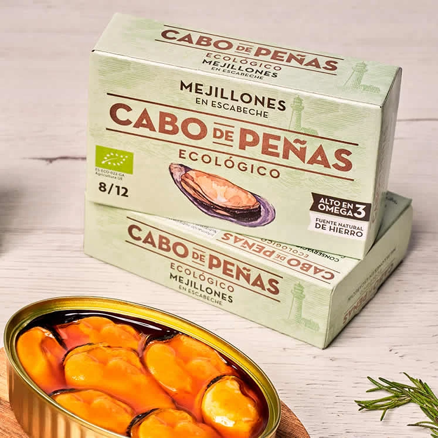
Cabo de Peñas · 111 g
Mejillones en escabeche
Miesmuscheln in Escabeche mit Apfelessig und Olivenöl. Die gezeigte Dose stammt aus Galicien.
12,90 €Beispielpreis
116,22 €/kg · zzgl. Versand
VINERIA DEL ESTE · TIENDA
Weine, Konserven und spanische Spezialitäten. Ein kleines Stück Vineria zum Mitnehmen.
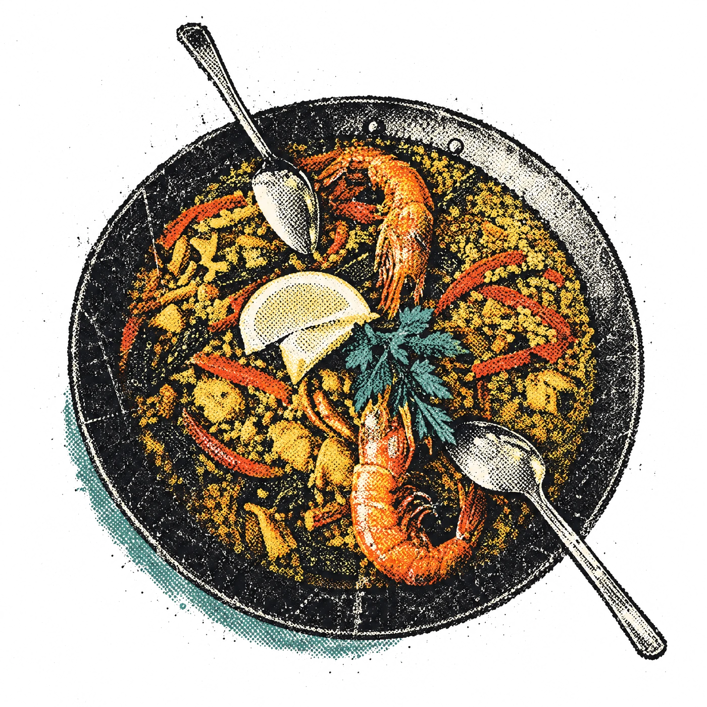
11 Produkte · Beispielsortiment

Miesmuscheln in Escabeche mit Apfelessig und Olivenöl. Die gezeigte Dose stammt aus Galicien.
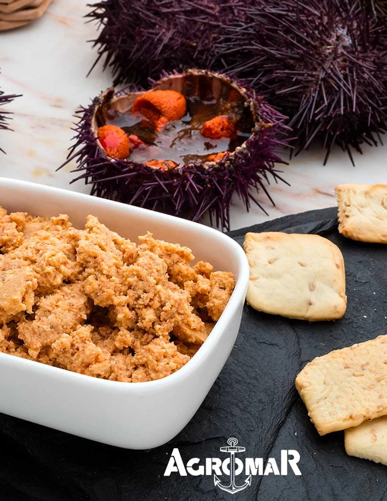
Seeigelrogen aus Asturien. Eine besondere kleine Konserve zum Teilen.
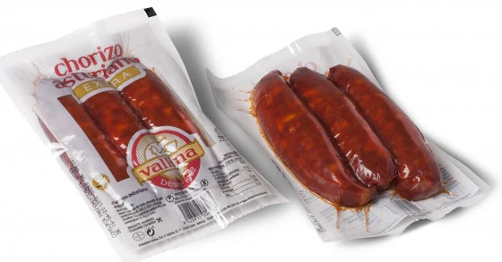
Über Eichenholz geräucherte Schweinewurst. Zum Garen, nicht als verzehrfertiger Aufschnitt.
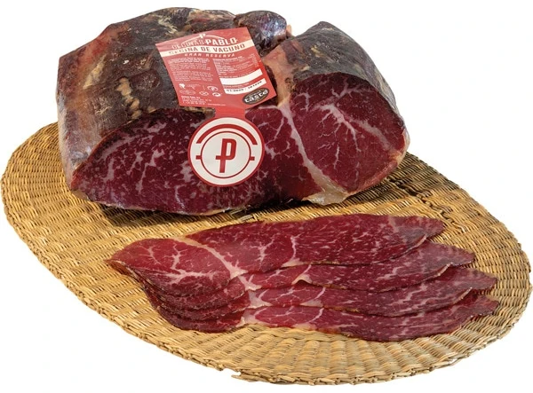
Luftgetrocknetes Rindfleisch, fein geschnitten und in einer kleinen Portion verpackt.
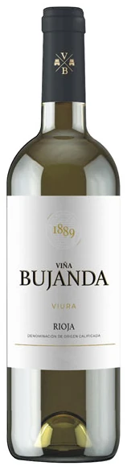
Viura. Aus der bestehenden Weinkarte der Vinería.
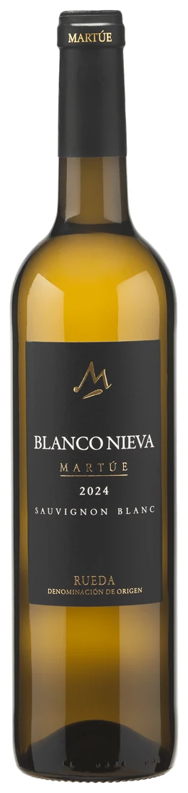
100 % Sauvignon Blanc. Aus der bestehenden Weinkarte.
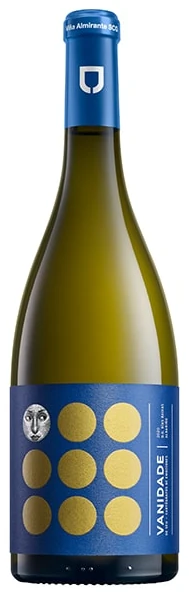
100 % Albariño. Aus der bestehenden Weinkarte.
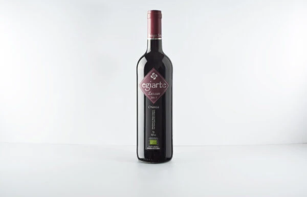
Tempranillo, Merlot und Cabernet Sauvignon. 12 Monate Barrique.
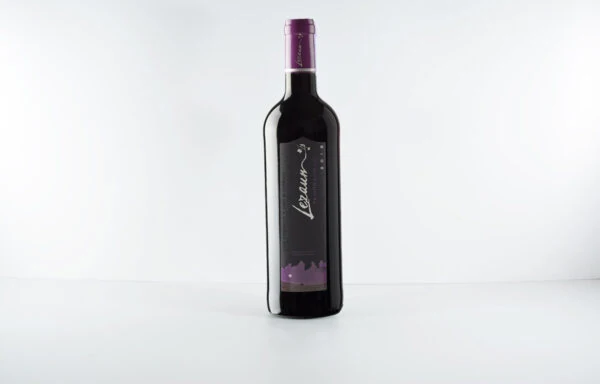
100 % Tempranillo. Aus der bestehenden Weinkarte.
100 % Garnacha. Aus der bestehenden Weinkarte.
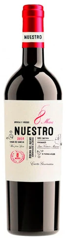
100 % Tempranillo. 8 Monate in französischen Eichenfässern.
Designvorschau: alle Preise, Jahrgänge und Kartongrößen sind Beispiele. Produktbilder dienen der Designvorschau. Produktkennzeichnung, Lagerung und Verfügbarkeit müssen vor Freigabe vollständig bestätigt werden.